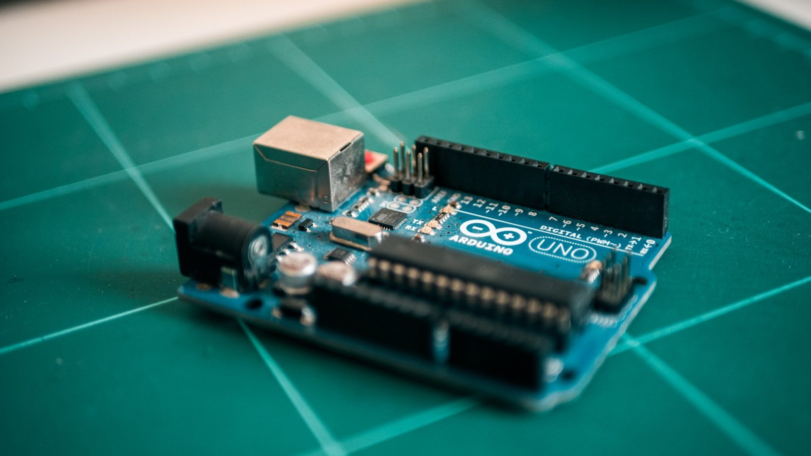

High school · AP
AP Calculus AB
Explore change, accumulation, and the mathematics behind motion. Connect graphs, equations, and real situations as you prepare for AP Calculus AB.
Project spotlightCalculus Coaster
Explore AP Calculus ABDesert Christian Schools · Fall 2026
From a first sketch to a working prototype. Explore five courses that connect big ideas, practical skills, and a heart to serve.
Learn. Create. Serve. With Mr. Barents

Five courses. Many ways to grow.
Explore what you’ll learn, what you’ll make, and where your curiosity could take you.
High school · AP
Explore change, accumulation, and the mathematics behind motion. Connect graphs, equations, and real situations as you prepare for AP Calculus AB.
Project spotlightCalculus Coaster
Explore AP Calculus ABHigh school · AP
Turn an idea into an interactive app. Explore programming, data, the internet, and the choices that shape our digital world.
Project spotlightApp Design
Explore AP CSPHigh school · Semester course
Build confidence around real vehicles. Learn safe shop habits, essential maintenance, and how to investigate a mechanical problem.
Project spotlightMaintenance Verification
Explore AutomotiveHigh school · UA dual enrollment
Work like an engineer: define a problem, build a prototype, gather evidence, and improve your design. Earn university credit through the University of Arizona partnership.
Project spotlightSolar Tracking & Prototyping
Explore Engineering 102 HSGrades 7–8 · Semester course
Sketch an idea. Build a model. Make something that helps someone. Discover engineering through creativity, 3D design, and a service-focused project.
Project spotlightDesign to Serve
Explore Intelligent DesignPhotos illustrate course themes and are not DCS student projects. Photo credits
Hands-on learning
Model a roller coaster. Create an app. Care for a vehicle. Test an engineering prototype. Design a solution for someone else.
Across these courses, students practice asking good questions, learning from evidence, and explaining their decisions.
Explore the course projectsFor enrolled students
Open your course for reference tools and reusable guidance. Google Classroom holds course documents, assignments, deadlines, submissions, and feedback.
Sign in to Google Classroom and open your enrolled class.
AP courses: AP Classroom Math practice: DeltaMath
Christ-centered. Purpose-driven.
Learn to think critically, work collaboratively, and apply your God-given abilities to meaningful problems.
“For we are God’s handiwork, created in Christ Jesus to do good works, which God prepared in advance for us to do.”
— Ephesians 2:10
Take the next step
Ask Mr. Barents about course expectations and preparation, and check with your school counselor about scheduling.
Secondary Campus
7525 E Speedway Blvd
Tucson, AZ 85710